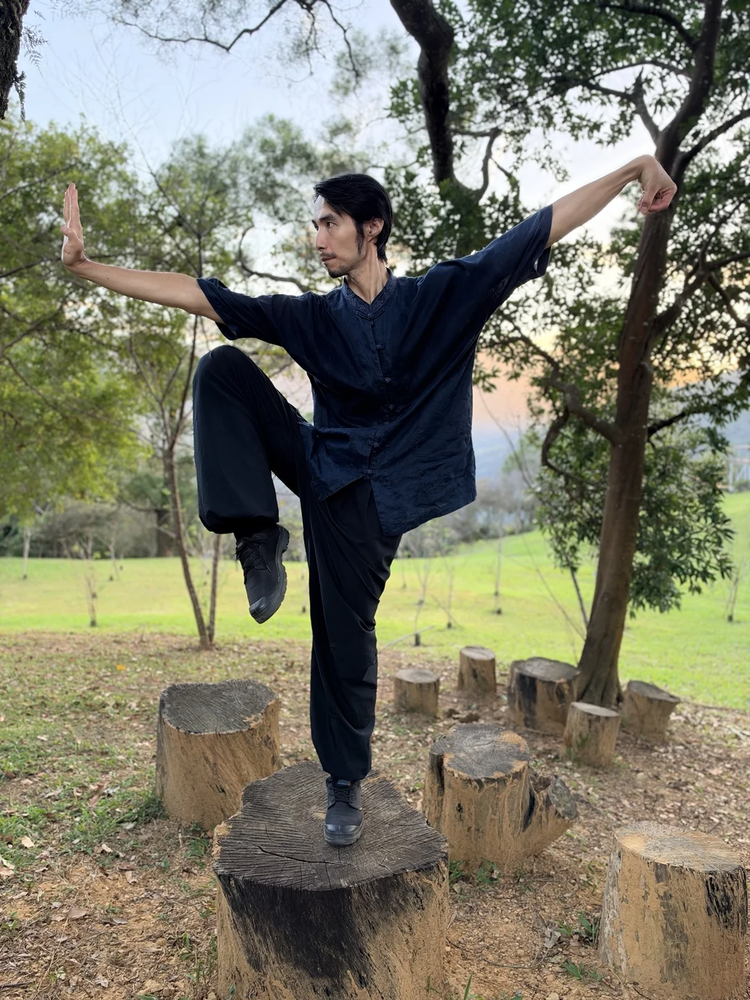
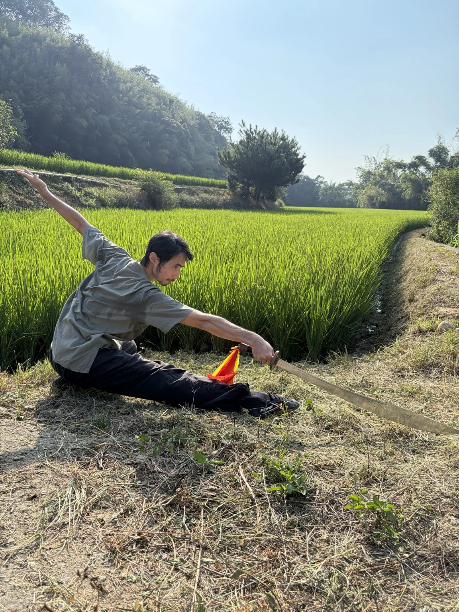
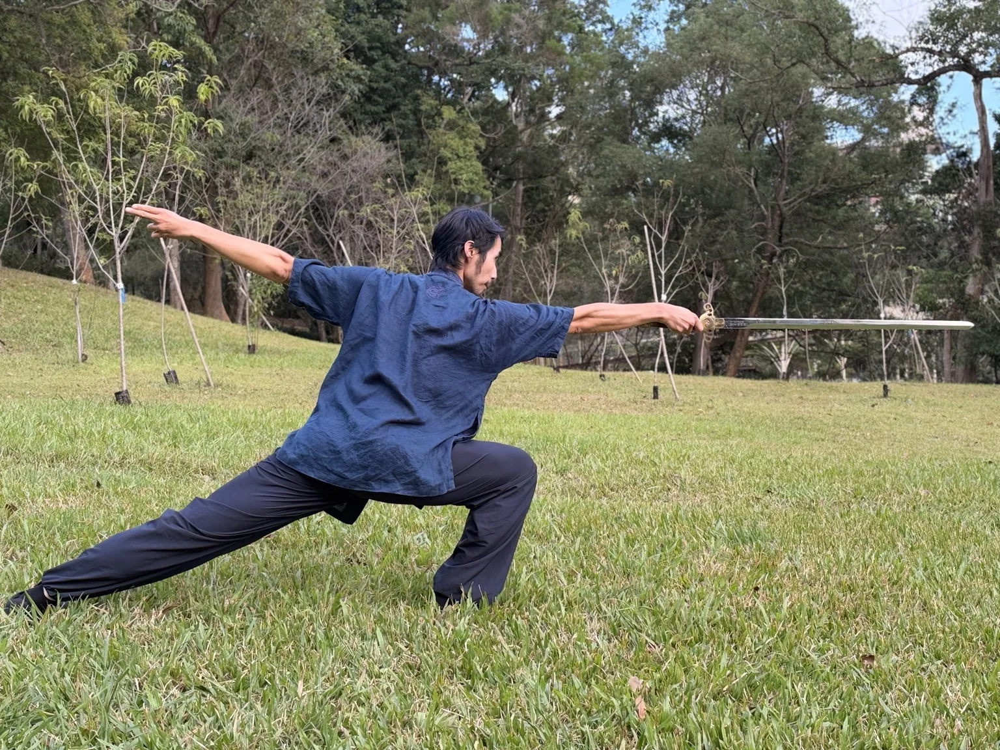
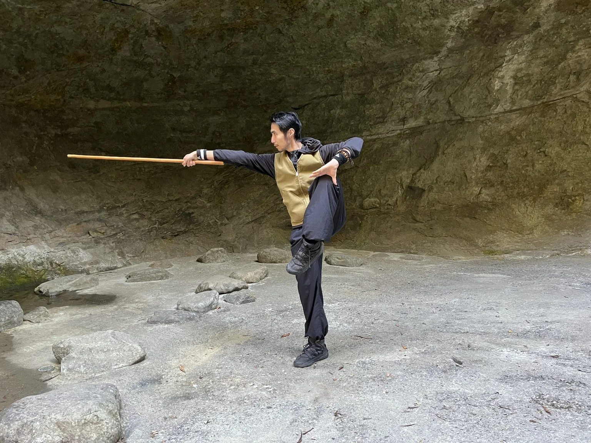
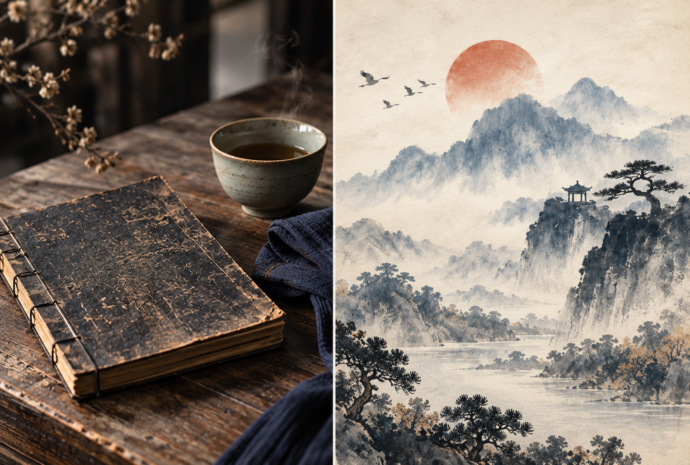
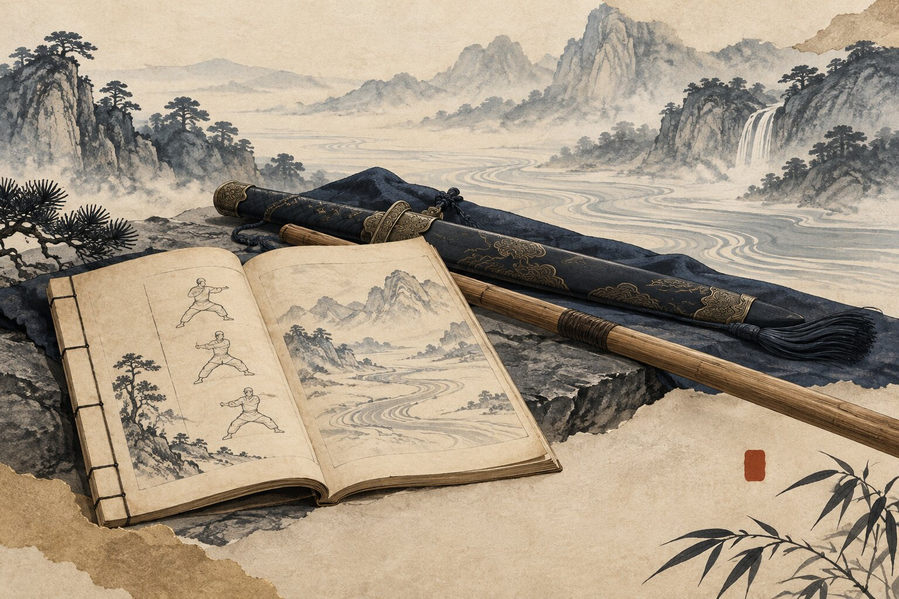
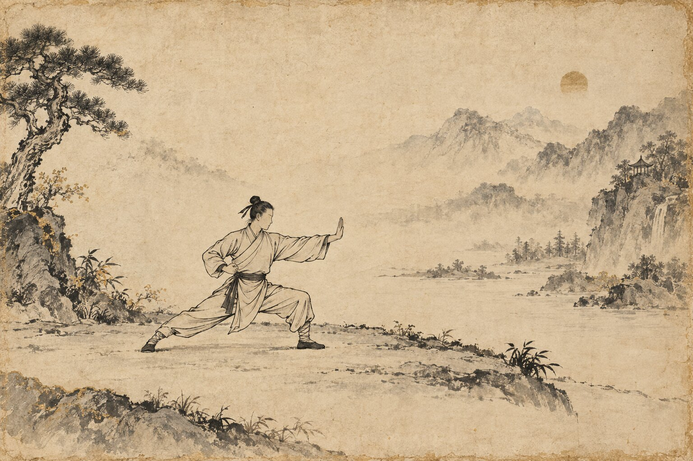
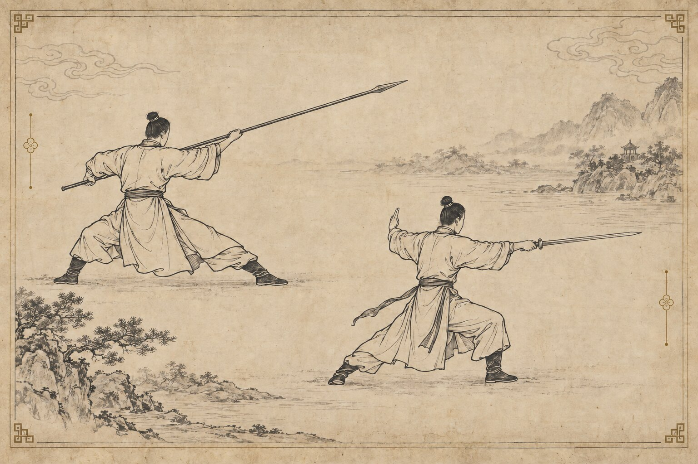

01 / 協會五大核心工作四時
一武一會
四季會員日
春習短兵、夏練基本功、秋習對練、冬養樁功。每季相聚，以武會友，在練習與交流中延續情誼。
會員專屬活動承續武學薪火，弘揚武德精神，
讓傳統文化在當代生生不息。
以武會友，以德修身，邀請更多朋友一同認識傳統武學之美。
傳統武術不僅是一招一式的技藝，更蘊含師承精神、武德修養與歷代相傳的文化智慧。本會致力於技藝傳承、武德教育、文化保存與國際交流。
左右滑動，欣賞拳、刀、劍與鞭桿




傳統武術，不僅是一招一式的技藝，更蘊含著師承精神、武德修養與歷代相傳的文化智慧。
我們致力於傳承武學、培育後學、保存文化，並透過四季會員日、社區公益與企業養生等活動，讓更多人親近傳統武術，感受習武修身的美好。
讓傳統武學走入生活，讓文化傳承持續發生。
認識我們正在做的事傳統武術不僅是拳腳兵器之技，更蘊含師承精神、武德修養與歷代相傳的文化智慧。本會以復興傳統武學文化為宗旨，重視技藝傳承、歷史紀錄、武德教育與國際交流。
我們透過四季會員日、社區公益、企業文化研習、武學培育及文化保存，邀請習武同好、文化愛好者與關心教育的各界朋友，一起認識傳統武學、參與傳承。
一招一式，是身體的鍛鍊；一起一落，也是心性的照見。習武所求，不在炫技，而在知進退、守分寸、明責任。
從站立、呼吸與步法開始，在反覆習練中建立穩定與秩序。
動中求靜，快中有定；不躁進，也不失去判斷與節制。
尊重源流、珍惜所學，並以適當的方法傳給願意學習的下一代。


從日常習練到公共推廣，讓傳統武術不只被保存，更能持續被理解、被實踐、被傳承。
從四季習武、企業養生，到武學培育、文化保存與社區公益，讓更多朋友看見傳統武術的文化價值與實際行動。
春習短兵、夏練基本功、秋習對練、冬養樁功。每季相聚，以武會友，在練習與交流中延續情誼。
會員專屬活動結合內家武學、靜功與東方養生文化，為企業團體規劃兼具文化深度與身心調和的研習交流。
企業團體合作洽詢重視基本功、拳械學習、師承脈絡與武德教育，逐步推動青少年及有志習武者的培育。
武學培育計畫持續整理師承故事、拳術史料與影像教材，並促進國內外傳統武學文化交流。
文化保存與交流透過社區公益體驗、養生練習及文化分享，邀請不同年齡的朋友親近傳統武學。
公益推廣與文化體驗從一次相識開始，一起為傳統文化留下一份力量。
從根本功法到武德文化，建立完整而可延續的學習與培育方向。
樁、腿、步、身、勁力，重視扎實基礎與身體結構。
以傳統拳術教學為核心，延續技法、身法與攻防理解。
劍、槍、刀、棍等傳統器械，講究法度、安全與文化脈絡。
將禮儀、自律、責任與傳承意識融入日常習武。
武術不只追求動作完成，也重視人的修養、責任與文化理解。
重視正確方法、基本功、身法與實際練習，讓傳承有所依據。
以禮、自律、安全與責任作為學習的一部分，不使技術與品格分離。
由學習、見習、協助到傳承，逐步建立下一代的責任與能力。
透過講座、紀錄、交流及公益推廣，讓傳統武術在社會中持續發聲。
形於外，而意存於內；以拳術修身，以兵器磨藝，承續傳統武學之精神與技藝。



一拳一式見根基，一刀一劍見功夫。從徒手拳術到傳統兵器，在日常演練中體會身法、勁力與傳統武學的深厚內涵。
本會為依法完成立案之全國性人民團體，致力於中華傳統武術之研究、教學、文化傳承與公益推廣。
以文化傳承、會員交流與公益推廣為核心，依活動性質規劃適合的研習與體驗；日期、資格及費用以個別公告為準。
傳統武術基本功、身法與文化入門，適合初學者了解習武之道。
長拳、螳螂拳、內家拳與傳統兵器的分級研習。
依習武基礎及課程要求進行評估，著重功法、拳械與對練。
有意參與課程者，請先來信洽詢：taiwan.tcmart@gmail.com
提供會員交流、研習活動與協會公告入口。會員限定教材與個人資料暫不公開上網。
會員日、武學交流與共同研習資訊，依協會正式公告辦理。
未來逐步規劃教材與教學影片；涉及會員權限的內容另採適當管理方式。
歡迎認同傳統武術文化推廣與傳承理念的朋友洽詢入會。
聯絡協會 →